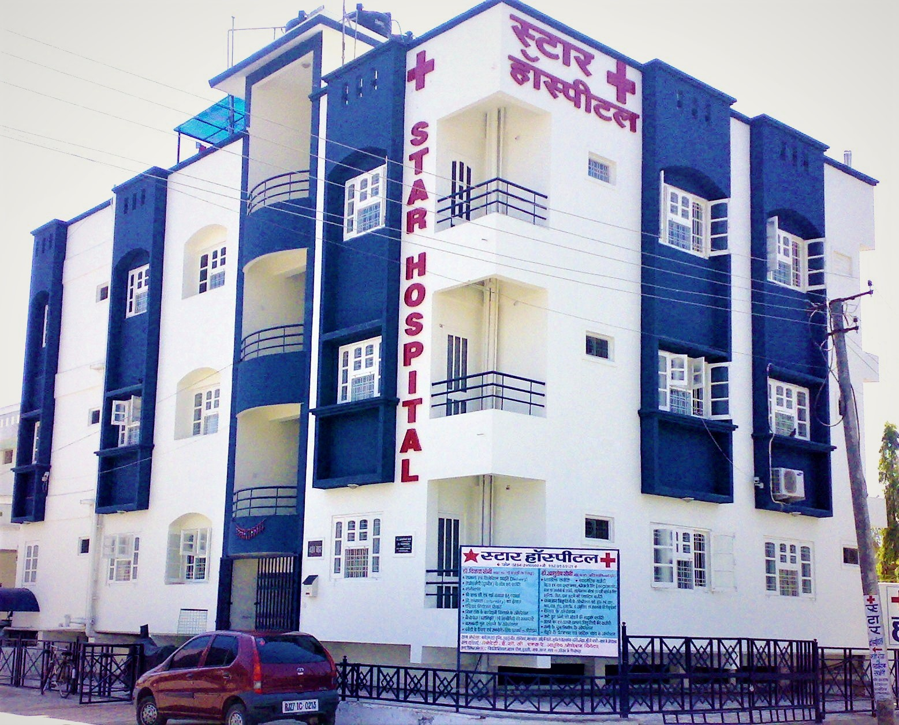
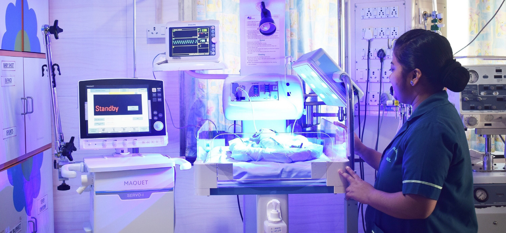
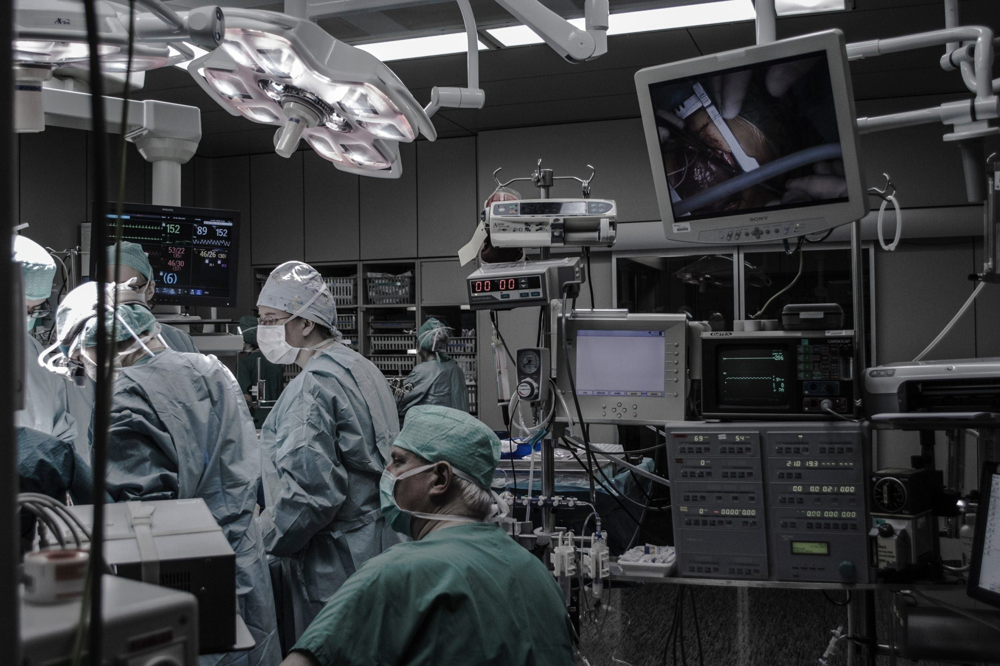
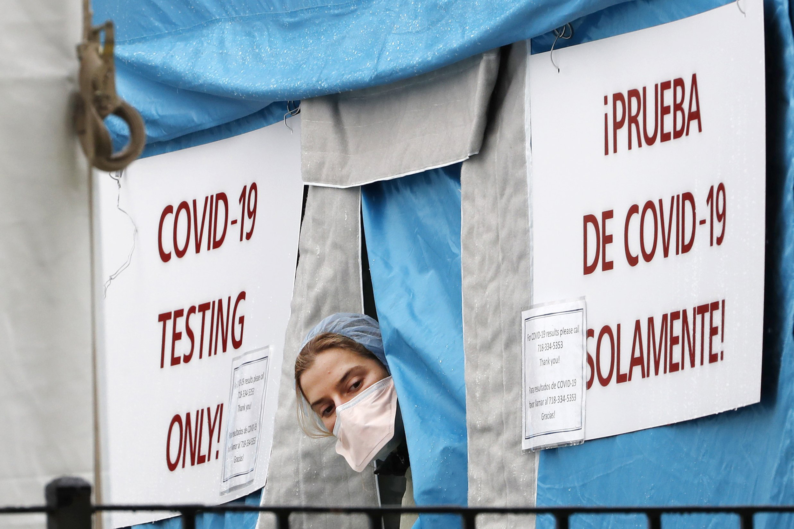

1 / 6

2 / 6

3 / 6

4 / 6

5 / 6
6 / 6

The STAR Medical College and Hospital was established in the year 1968. Since its inception, the SMC Hospital is rendering its yeomen’s services to the suffering community of the entire southern part of Assam and its neighbouring states. In the year 1971, the Civil Hospital of Silchar, situated in the heart of the city about 6 kms away from the permanent college building, was taken over as the teaching hospital of the STAR Medical College. Thereafter, in 1977-78, the main hospital building complex at its permanent site was commissioned.
The huge three-storied hospital building houses the following departments including their out-patient departments (O.P.D.), wards, operation theatres, X-Rays, Laboratory facilities etc.:
There is another separate three-storied block for the Dept. of Pathology and Microbiology. The Microbiology dept. will be shifted to its permanent building as soon as it is commissioned.
The departments of Tuberculosis and Chest Diseases as well as the isolation wards are situated in separate buildings within the college campus a little away from the main hospital building.
The Central Library of the college is presently housed in the ground floor of the main hospital building.